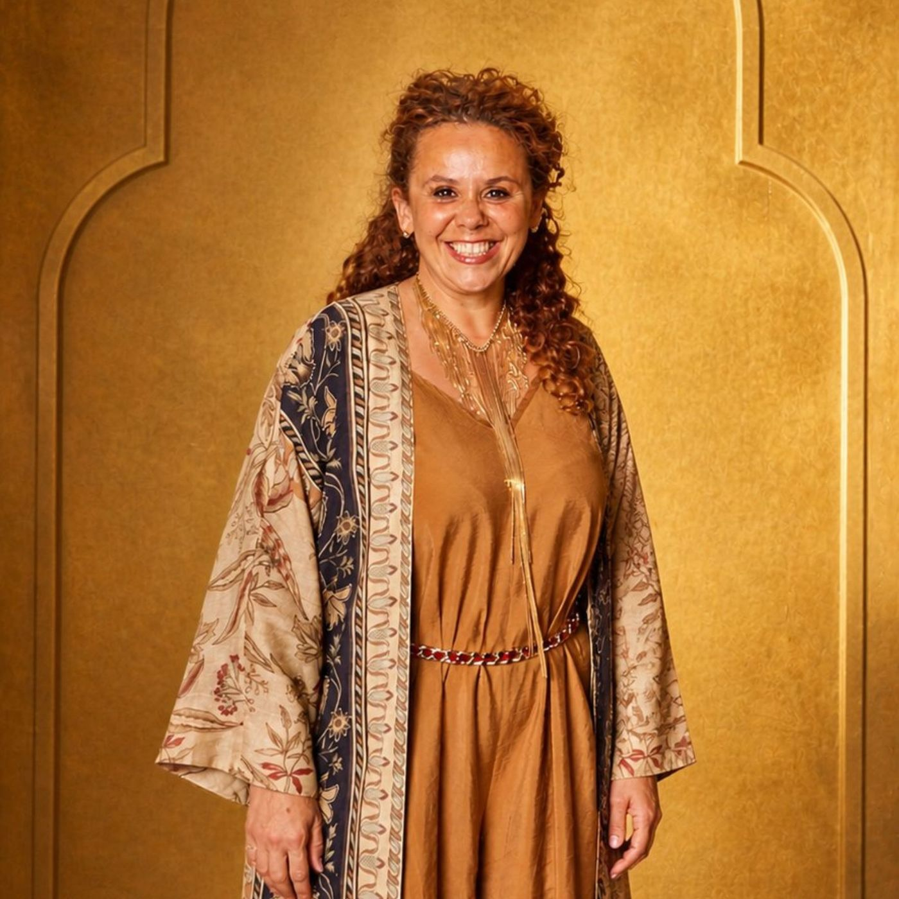
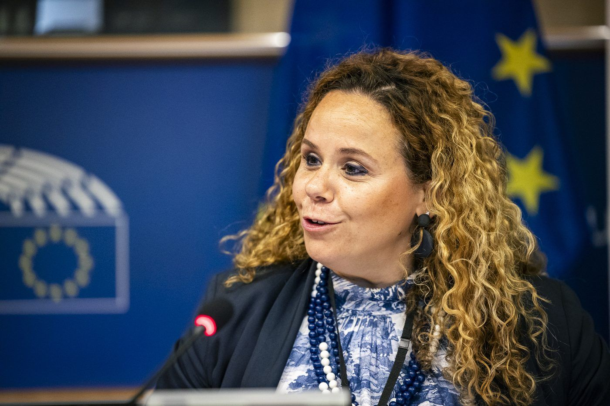
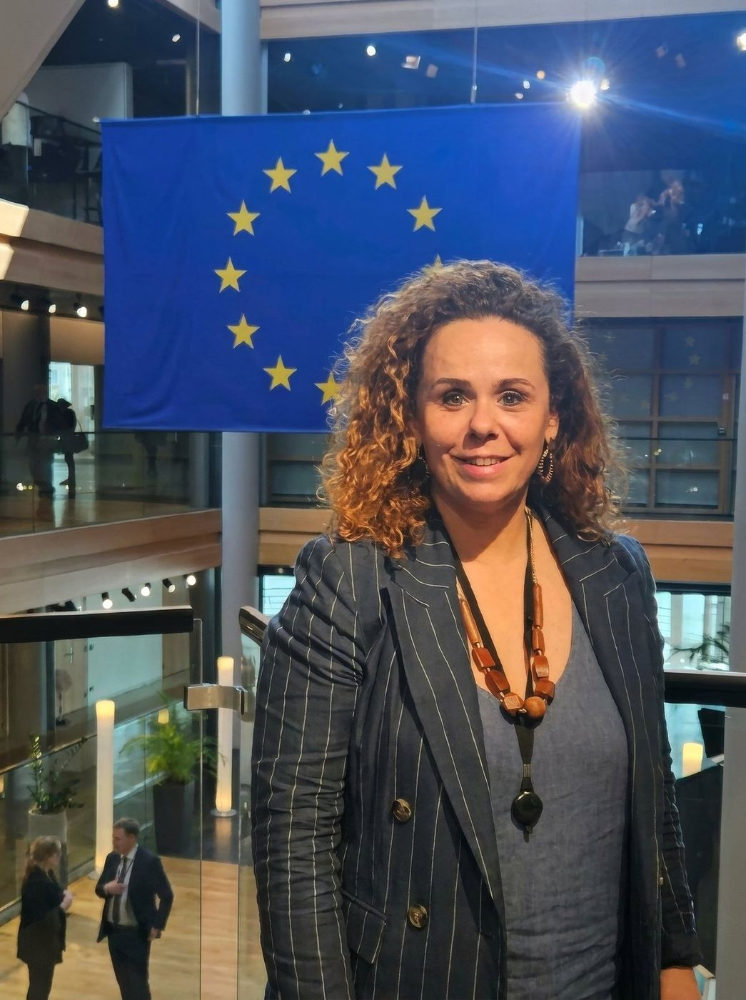

Affianco imprese, associazioni ed enti nel navigare le politiche dell'Unione europea — trasformando la complessità normativa in opportunità reali.

Sede operativa
Brussels, Belgium
15+
Anni in EU affairs
600K
PMI italiane rappresentate
2006
Prima presenza a Bruxelles
Cosa faccio
Attività e servizi
Tutti i servizi →
01
Advocacy & Lobbying
Strategie di influenza e rappresentanza d'interesse presso le istituzioni UE. Position papers, policy briefs, stakeholder mapping.
Temporary EU Affairs Manager
02
Relazioni Istituzionali
Organizzazione di incontri con eurodeputati e funzionari. Accesso a piattaforme europee, gruppi di lavoro e reti settoriali.
Stakeholder Engagement
03
Monitoraggio Normativo
Analisi di dossier legislativi, early warning su nuove proposte. Report periodici e mappatura di rischi e opportunità.
Policy Intelligence
04
Brussels Market Activation
Missioni B2B, eventi istituzionali, promozione del Made in Italy. Sviluppo di relazioni commerciali in Belgio e a Bruxelles.
Commercial Development
05
Formazione EU
Workshop sul funzionamento delle istituzioni UE. Percorsi formativi personalizzati per imprese, associazioni ed enti.
Training
06
Finanziamenti & Partenariati
Orientamento tra programmi e bandi UE. Supporto alla costruzione di partenariati europei e accompagnamento strategico.
EU Funding
Come lavoro
«Entro a far parte della squadra del cliente, accompagnandolo passo dopo passo.»
— Elisa Vitella, EValue Consulting
01
Approccio su misura
Ogni collaborazione nasce da un'esigenza specifica, sviluppata attraverso dialogo costante.
02
Lavoro in squadra
Affiancamento continuo: ogni azione viene condivisa, spiegata e costruita insieme.
03
Un ponte con Bruxelles
Presenza stabile e rete consolidata per dare voce diretta agli interessi del cliente.

Elisa Vitella
Founder, EValue Consulting · Brussels
Da oltre 15 anni affianco imprese, associazioni ed enti nel comprendere e navigare le politiche UE, trasformando la complessità normativa in strategie operative, relazioni solide e opportunità reali.
Leggi il profilo completo →
«Per dare voce e spazio alle tue idee: parliamone.»
Tre aree di intervento per rispondere a esigenze diverse: dalla presenza istituzionale a Bruxelles allo sviluppo commerciale in Belgio, fino alla formazione e ai finanziamenti europei.
Area 01 — Temporary EU Affairs Manager
01Advocacy & Lobbying Europea
Strategico+
Definizione di strategie di influenza e rappresentanza d'interesse
Identificazione di stakeholder e decisori chiave (Commissione, Parlamento, Consiglio, CESE, CdR)
Redazione di position papers, policy briefs e raccomandazioni
Gestione di dossier legislativi e follow-up istituzionale
Organizzazione di incontri con eurodeputati, funzionari UE, uffici permanenti
Training e preparazione per riunioni istituzionali
Accesso a piattaforme europee, gruppi di lavoro e reti settoriali
Pianificazione relazioni con associazioni e organizzazioni europee
03Monitoraggio & Analisi delle Politiche UE
Intelligence+
Analisi dei dossier legislativi chiave (regolamenti, direttive, decisioni)
Early warning su nuove proposte della Commissione
Report periodici sugli sviluppi normativi
Mappatura di rischi e opportunità per settore e impresa
Area 02 — Brussels & Belgium Market Activation
04Ricerca Partner & Missioni B2B
Commerciale+
Identificazione e screening di distributori, agenti, importatori
Organizzazione di incontri B2B, missioni imprenditoriali e matchmaking
Networking mirato tra imprese, istituzioni e stakeholder europei
05Sviluppo Relazioni Istituzionali in Belgio
Network+
Accompagnamento nella creazione e consolidamento di relazioni commerciali e strategiche
Connessioni con partner, reti e organizzazioni chiave del contesto belga ed europeo
06Eventi Istituzionali & Made in Italy
Eventi+
Ideazione e organizzazione di eventi istituzionali e promozionali
Promozione del Made in Italy: filiere, territori, competenze in chiave europea
Area 03 — EU Strategic Engagement & Funding Support
07Formazione su Politiche UE & Lobbying
Formazione+
Workshop sul funzionamento delle istituzioni UE e sui processi legislativi
Corsi di formazione su lobbying, comunicazione politica e affari europei
Percorsi formativi personalizzati per team aziendali o associazioni
08Finanziamenti Europei & Partenariati
Funding+
Orientamento tra programmi e bandi UE
Supporto alla costruzione di partenariati europei
Accompagnamento strategico nei progetti finanziati dall'UE
Interessato a un'area specifica?
Chi sono
Elisa Vitella
EU Affairs professional con oltre 15 anni di esperienza a Bruxelles. Founder di EValue Consulting dal gennaio 2026.

Elisa Vitella
Founder · EValue Consulting · Brussels, Belgium
Nata a Lecco, cresciuta tra campagna e città. Da oltre 15 anni affianco imprese, associazioni ed enti nel navigare le politiche dell'Unione europea, trasformando la complessità normativa in strategie operative e opportunità reali.
Bruxelles dal 2006, dal 2012 al 2025 ho guidato l'ufficio CNA a Bruxelles rappresentando oltre 600.000 PMI italiane a livello europeo.
Sono italiana, vivo in Belgio - la mia seconda casa - e credo profondamente nel valore del saper fare, delle competenze e delle relazioni costruite con cura.
E, sopra ogni cosa, sono mamma: il progetto più importante, stimolante e trasformativo della mia vita.
Master in European AffairsInternational BusinessManagementCommercio Estero
Visione strategica
Bruxelles non solo come sede delle istituzioni europee, ma come ecosistema vivo fatto di persone, opportunità e connessioni. Una presenza stabile e una rete consolidata al servizio del cliente.
Valore aggiunto
Conosco in profondità il funzionamento delle istituzioni UE, i processi decisionali e le dinamiche politiche formali e informali. Questo mi permette di leggere in anticipo i trend e tradurli in scelte operative.
Come lavoro
Metodo, squadra e presenza
Non propongo soluzioni standard. Costruisco il supporto caso per caso, adattando strategia, strumenti e tempistiche alle esigenze specifiche del cliente.
01
Approccio su misura
Ogni collaborazione nasce da un'esigenza specifica e si sviluppa attraverso un dialogo costante. Adatto strategia e strumenti in base alla tipologia di richiesta, al profilo del cliente e agli obiettivi.
02
Lavorare in squadra
Entro a far parte della squadra del cliente, accompagnandolo passo dopo passo. Il confronto è costante: ogni azione viene condivisa, spiegata e costruita insieme.
03
Un ponte con Bruxelles
Grazie alla presenza stabile a Bruxelles e alla rete di contatti sviluppata negli anni, svolgo un ruolo di intermediario strategico tra il cliente e le istituzioni, rappresentanze e stakeholder europei.
Metodo
Rigorosa nell'analisi, strategica nella visione, concreta nelle relazioni. Lavoro con uno stile diretto e strutturato, costruendo nel tempo risultati e relazioni duraturi.
Qualità
Unisco all'esperienza e alle competenze maturate attenzione, passione e determinazione, garantendo un approccio affidabile e orientato al risultato.
Contatti
«Per dare voce e spazio alle tue idee: parliamone.»